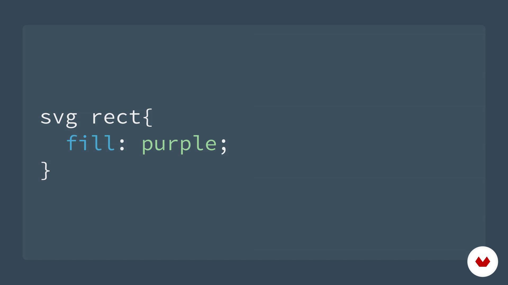

CSS (Cascading Style Sheets) es un lenguaje de estilo que define la presentación de los documentos HTML.
CSS abarca cuestiones relativas a fuentes, colores, márgenes, líneas, altura, anchura, imágenes de fondo,
posicionamiento avanzado y muchos otros temas.
¿Qué ofrece CSS?
• Control de la presentación de muchos documentos desde una única hoja de estilo.
• Control más preciso de la presentación.
• Aplicación de diferentes presentaciones a diferentes tipos de medios (pantalla, impresión, etc.).
• Numerosas técnicas avanzadas y sofisticadas.

Estilos: Inline vs. Instyle.
• Inline: Se suele utilizar para aplicar un estilo a un unico elemento.
Utiliza el atributo Style de HTML.
• Instyle: Utilizado cuando va a aplicarse un mismo estilo a múltiples elementos del mismo tipo.
Se define con el elemento Style del apartado head de un archivo HTML.
La prioridad entre ambos estilos es inline sobre instyle.
Ventajas de inline:
• Util para hacer testing al inicio de un proyecto.
• Tiene un tiempo de recarga más rapido.
• Permite hacer quick fixes con mayor facilidad.
Ventajas de instyle:
• Compatibilidad con todos los navegadores.
• Es posible establecer pseudo-elementos con instyle.
• Permite hacer quick fixes con mayor facilidad.
Library / CDN
CDN se define como el conjunto de ubicaciones en el mundo, que redistribuyen localmente el contenido
de los servidores y guardan en caché los archivos que no necesitan actualizaciones según su estructura de personalización.
Library
• Con HTML es posible importar style sheets que ya tiene CSS en un servidor local.
• Todo se puede encontrar en archivos locales .
• Permite hacer quick fixes con mayor facilidad.
SVG Animation
SVG (Scalable Vector Graphics) es un formato de imagen 2D que guarda la información en forma de vectores (coordenadas) por lo que es posible utilizarlo facilmente en web.
